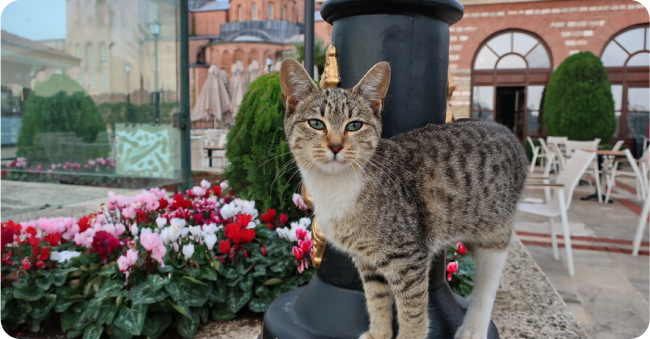

Тысячи лет назад на Земле появился первый кот. Точно сказать, когда это было, невозможно, но благодаря археологическим раскопкам можно определить место, где появились первые кошки в мире, это была Северная Африка. Останки доисторических кошек также были найдены в других местах, например, недалеко от Коньи в Турции, в Иерихоне в Израиле, в долине Инда (Хараппа) и на Кипре. Останки кошек раннего бронзового века были найдены при раскопках в Трое. Примечательно, что останки кошки доисторического периода или даже немного более позднего Древнего царства в Египте, считающегося первоначальным домом домашней кошки, не обнаружены. Однако благодаря египетскому искусству, таким как настенные росписи или бронзовые статуи кошек, мы можем узнать о жизни домашней кошки примерно с 2000 года до нашей эры. Анимизм, который был важным религиозным верованием древних египтян, заставлял их поклоняться божественной силе кошки, существующей внутри него. По их верованиям, в каждом организме есть бог, человек и животное. Во время раскопок в Египте были обнаружены сотни мумий кошек, которые были похоронены вместе со своими хозяевами, чтобы те могли сопровождать их в загробную жизнь. Есть также свидетельства того, что кошек приносили в жертву богине Бастет.
А какое место кошке было в Древней Греции или Риме? В Греции в произведениях эпохи поздней бронзы, в основном на фресках, можно встретить изображения кошек.Не мало места в Древней Греции отведено кошкам. Мы находим связь в предмете религии. Древние греки отождествляли богиню Артемиду с египетской богиней Басет, и, таким образом, богиня Артемида имела возможность войти в тело кошки (метаморфоза). Что касается Древнего Рима, кошка там была чужда, и об этом не может быть и речи до 30 г. до н.э., когда римляне завоевали Египет, и кошка была завезена в южную Италию. Однако в римской литературе о собаках говорится больше, чем о кошках. Четвероногим другом римлян в первую очередь была собака, и именно для них писались стихи и воздвигались надгробия. В чем ценность кошки в средние века? Лучше всего это отражено в знаменитых законах короля Уэльса Хайуэлла Дда (X век), которые гласят примерно следующее: «Кошка стоит четыре пенса. Функции: видеть, слышать, убивать мышей, иметь полные лапы, хорошо относиться к своему потомству и не есть их. Если какая-либо из этих функций неисправна, должна быть возмещена треть полученного вознаграждения ». Что происходит с кошками между 1000 и 1700 годами? В то время многие женщины и их кошки были замучены и зарезаны во время судебных процессов над ведьмами. В то время Церковь считала, что черная кошка символизировала злую силу и была населена сатаной и демоническими духами. Женщин, у которых дома была кошка, обвиняли в колдовстве и казнили.
На самом деле кошки, которых мы можем встретить в Турции, внешне не отличаются от наших домашних кошек. Они ухожены, имеют красивую блестящую шерсть. Кошки рядом с известнейшими памятниками архитектуры стали образом Стамбула и своеобразной частью этого города, который иногда называют кошачьей империей. Кошки повсюду. Несколько лет назад был снят документальный фильм «Кеди - тайная жизнь кошек» о жизни Стамбульских кошек. Общительные стамбульские кошки уже много лет живут в прекрасном симбиозе с людьми, и их влияние на людей носит терапевтический характер. Доказано, что поглаживание животного снимает стресс и вызывает выброс гормона счастья, который делает людей счастливыми. Казалось бы, у кошек в Стамбуле есть своя миссия - очистить город от грызунов. В районе Кадыкёй была создана статуя кошки по имени Томбили, которая была любимцем жителей города и символом улицы Гюлеч, где она отдыхала в непринужденной позе. После ее смерти было решено запечатлеть ее непринужденный подход к реальности 😊
На самом деле ангоры в течение нескольких столетий имели только белый мех, их глаза встречались разного цвета (зеленый, синий, золотой, иногда также двухцветный). Последующее искусственное скрещивание сделало кошек с не только с белым окрасом.Ангоры, как я уже сказал, чрезвычайно умны и, кроме ласк, им нужны еще и интеллектуальные игры. Ангоры - кошки, которые отлично подойдут в семьях с детьми, потому что даже во время игры они не проявляют никаких черт агрессии и могут адаптироваться к своим хозяевам. Ангора очень беззаботна и доверчива даже к незнакомцам. Ангоры - коренные жители Кавказа, что свидетельствует о тесном родстве с другой турецкой породой кошек, а именно с турецким Ван. Эту породу часто путают с ангорой, но есть одно главное, что отличает эти породы - турецкий ван - плавающая кошка. Есть несколько функций, которые позволяют им плавать. У Ванов красивый мех, который имеет очень важную особенность - он водонепроницаем, что позволяет плавать в воде. Дополнительная функция, позволяющая эффективно передвигаться в воде, - это мускулистое телосложение. У Вана пушистый хвост, характерная шерсть на задних лапах и типичный для этой породы меховой воротник, который появляется примерно в возрасте шести лет. Ван использует хвост как руль управления. Характерно, что у Ванов есть перепонки (дополнительная складка кожи) между пальцами, которые облегчают плавание, как плавники. Ваны имеют белый мех, цветные элементы можно найти на голове и хвосте, и что характерно и очень эффектно, так это двухцветные глаза, один из которых обычно синий, а другой янтарный. Кошки этой породы очень любят ласки, но сами решают, в каком виде, они не любят, например, носить на руках. Обычно они выбирают члена семьи, которому они больше всего преданы, но верны остальным. У них сильно развит охотничий инстинкт и они очень умны, поэтому их можно научить различным трюкам, они даже будут оппорировать. Они любят лазить высоко, но это, наверное, единственная кошка, которая не всегда падает на четыре лапы.
Спасибо за внимание